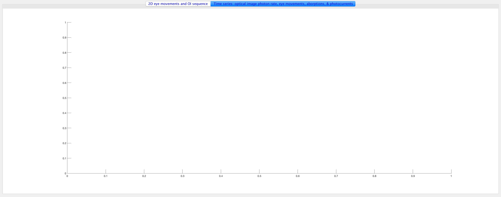
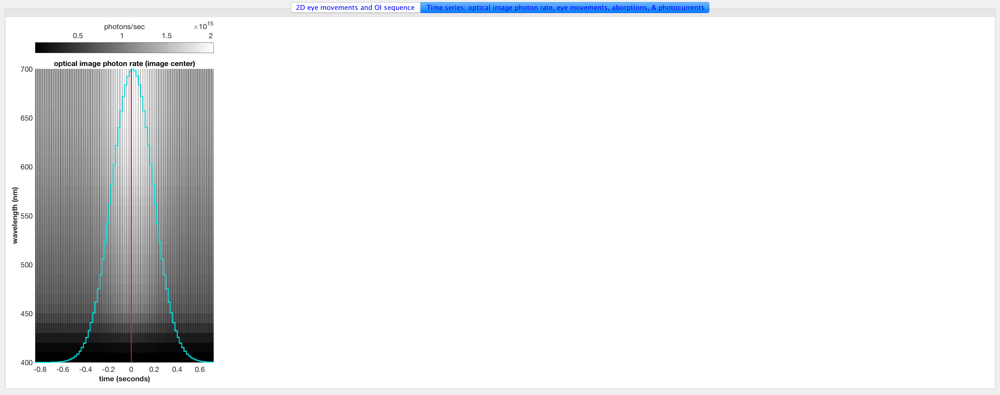
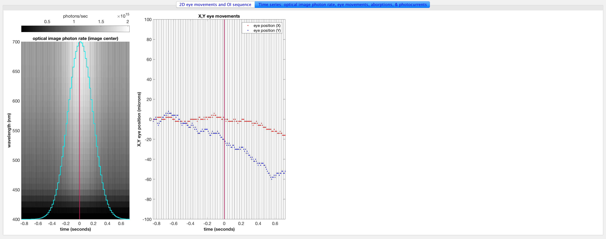
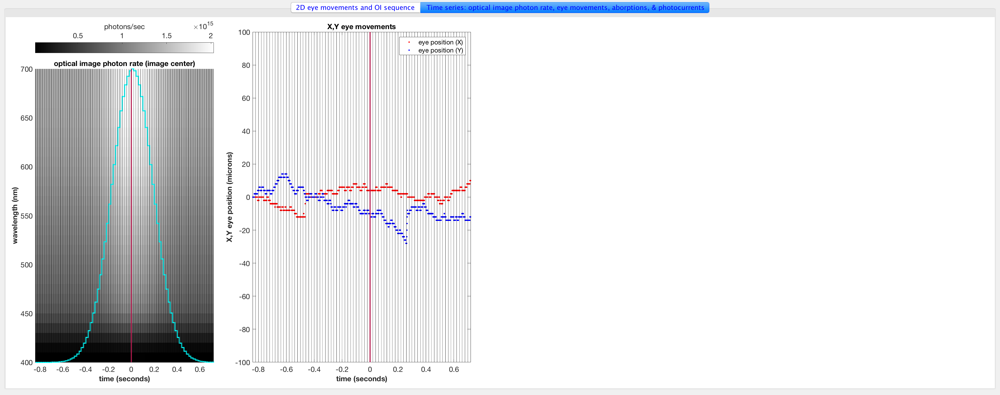
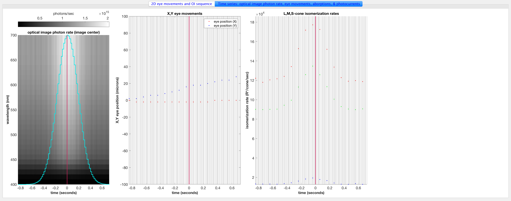
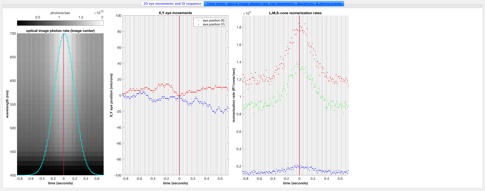
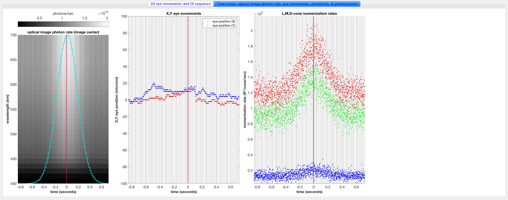
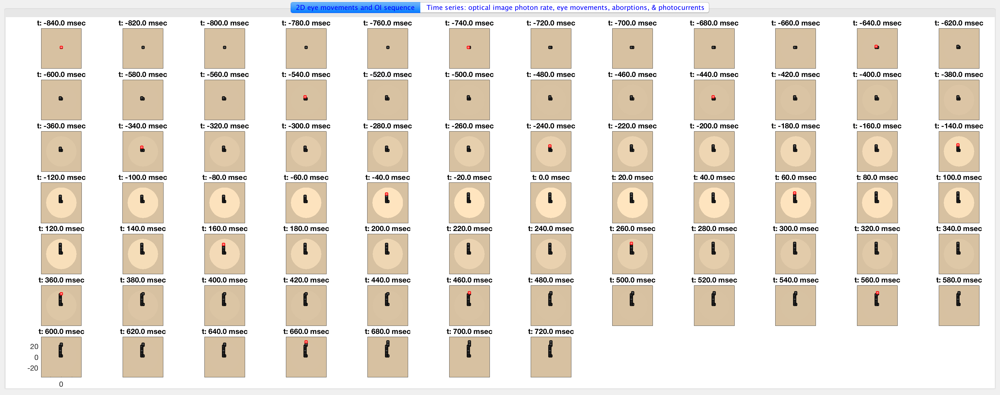
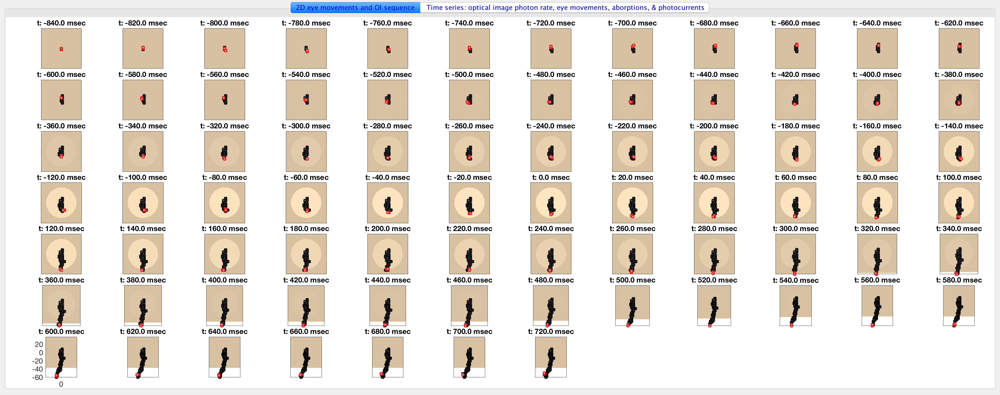
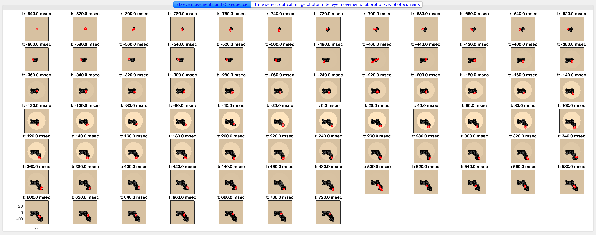

Contents
function t_osTimeStep
Init
ieInit;
conditionSet = 1;
condData = makeConditionSet(conditionSet);
for stimulusConditionIndex = 1:numel(condData)
c = condData{stimulusConditionIndex};
[theConeMosaic, theOIsequence, ...
isomerizationRateSequence, photoCurrentSequence, ...
oiTimeAxis, absorptionsTimeAxis, photoCurrentTimeAxis] = runSimulation(c.mosaicSize, c.meanLuminance, c.modulation, c.modulationRegion, c.stimulusSamplingInterval, c.integrationTime, c.osTimeStep, c.photonNoise, c.osNoise);
plotEverything(theConeMosaic, theOIsequence, isomerizationRateSequence, photoCurrentSequence, oiTimeAxis, absorptionsTimeAxis, photoCurrentTimeAxis, stimulusConditionIndex, c);
end
No current noise added.
No current noise added.
No current noise added.
end
function [theConeMosaic, theOIsequence, ...
isomerizationRateSequence, photoCurrentSequence, ...
oiTimeAxis, absorptionsTimeAxis, photoCurrentTimeAxis] = runSimulation(mosaicSize, meanLuminance, modulationGain, modulationRegion, stimulusSamplingInterval, integrationTime, osTimeStep, photonNoise, osNoise)
minTime = -0.84;
maxTime = 0.72;
oiTimeAxis = minTime:stimulusSamplingInterval:maxTime;
stimulusRampTau = 0.18;
modulationFunction = modulationGain * exp(-0.5*(oiTimeAxis/stimulusRampTau).^2);
if (isnan(mosaicSize))
FOV = 0.2;
else
FOV = max(mosaicSize);
end
theScene = uniformFieldSceneCreate(FOV, meanLuminance);
noOptics = false;
theOI = oiGenerate(noOptics);
theOIsequence = oiSequenceGenerate(theScene, theOI, oiTimeAxis, modulationFunction, modulationRegion);
theConeMosaic = coneMosaicGenerate(mosaicSize, photonNoise, osNoise, integrationTime, osTimeStep);
eyeMovementsNum = theOIsequence.maxEyeMovementsNumGivenIntegrationTime(theConeMosaic.integrationTime);
theConeMosaic.emGenSequence(eyeMovementsNum);
[absorptionsCountSequence, photoCurrentSequence] = ...
theConeMosaic.computeForOISequence(theOIsequence, ...
'currentFlag', true ...
);
absorptionsTimeAxis = theConeMosaic.timeAxis + theOIsequence.timeAxis(1);
photoCurrentTimeAxis = absorptionsTimeAxis;
isomerizationRateSequence = absorptionsCountSequence / theConeMosaic.integrationTime;
end
function theConeMosaic = coneMosaicGenerate(mosaicSize, photonNoise, osNoise, integrationTime, osTimeStep)
theConeMosaic = coneMosaic;
if isnan(mosaicSize)
theConeMosaic.rows = 1;
theConeMosaic.cols = 3;
theConeMosaic.pattern = [2 3 4];
else
theConeMosaic.setSizeToFOV(mosaicSize);
end
theConeMosaic.noiseFlag = photonNoise;
theConeMosaic.integrationTime = integrationTime;
theOuterSegment = osLinear();
theOuterSegment.noiseFlag = osNoise;
theOuterSegment.timeStep = osTimeStep;
theConeMosaic.os = theOuterSegment;
end
function theOIsequence = oiSequenceGenerate(theScene, theOI, oiTimeAxis, modulationFunction, modulationType)
oiBackground = oiCompute(theOI, theScene);
oiModulated = oiBackground;
if strcmp(modulationType, 'FULL')
theOIsequence = oiSequence(oiBackground, oiModulated, oiTimeAxis, modulationFunction, 'composition', 'add');
else
pos = oiGet(oiBackground, 'spatial support', 'microns');
modulationRegion.radiusInMicrons = 0.75*max(pos(:));
theOIsequence = oiSequence(oiBackground, oiModulated, oiTimeAxis, modulationFunction, 'modulationRegion', modulationRegion);
end
end
function theOI = oiGenerate(noOptics)
if (noOptics)
theOI = oiCreate('diffraction limited');
optics = oiGet(theOI,'optics');
optics = opticsSet(optics,'fnumber',0);
optics = opticsSet(optics, 'off axis method', 'skip');
theOI = oiSet(theOI,'optics', optics);
else
theOI = oiCreate('human');
end
end
function uniformScene = uniformFieldSceneCreate(FOV, meanLuminance)
uniformScene = sceneCreate('uniform equal photon', 128);
uniformScene = sceneSet(uniformScene, 'wAngular', FOV);
uniformScene = sceneSet(uniformScene, 'distance', 1.0);
uniformScene = sceneAdjustLuminance(uniformScene, meanLuminance);
end
function plotEverything(theConeMosaic, theOIsequence, isomerizationRateSequence, photoCurrentSequence, oiTimeAxis, absorptionsTimeAxis, responseTimeAxis, figNo, condData)
hFig = figure(figNo); clf;
set(hFig, 'Position', [10+figNo*50 10+figNo*100 1920 760], 'Color', [1 1 1]);
set(hFig, 'Name', sprintf('Scene Mean Luminance: %2.1f cd/m2, Modulation: %2.2f, Stimulus Sampling: %2.1f ms, Integration Time: %2.1f ms, osTimeStep: %2.1f ms, PhotonNoise: %s, osNoise: %s', condData.meanLuminance, condData.modulation, condData.stimulusSamplingInterval*1000, condData.integrationTime*1000, condData.osTimeStep*1000, condData.photonNoise, condData.osNoise));
tabGroup = uitabgroup('Parent', hFig);
eyeMovementsTab = uitab(tabGroup, 'Title', '2D eye movements and OI sequence', 'BackgroundColor', [1 1 1], 'ForegroundColor', [0 0 1]);
timeSeriesTab = uitab(tabGroup, 'Title', 'Time series: optical image photon rate, eye movements, aborptions, & photocurrents', 'BackgroundColor', [1 1 1], 'ForegroundColor', [0 0 1]);
set(tabGroup, 'SelectedTab',eyeMovementsTab);
axes('parent',eyeMovementsTab);
plotRows = round(0.75*sqrt(theOIsequence.length));
plotCols = ceil(theOIsequence.length/plotRows);
subplotPosVectors = NicePlot.getSubPlotPosVectors(...
'rowsNum', plotRows, ...
'colsNum', plotCols, ...
'heightMargin', 0.03, ...
'widthMargin', 0.03, ...
'leftMargin', 0.03, ...
'rightMargin', 0.00, ...
'bottomMargin', 0.03, ...
'topMargin', 0.02);
maxRGB = 0;
for oiIndex = 1:theOIsequence.length
tmp = xyz2rgb(oiGet(theOIsequence.frameAtIndex(oiIndex), 'xyz'));
if (maxRGB < max(tmp(:)))
maxRGB = max(tmp(:));
end
oiImage{oiIndex} = tmp;
end
eyeMovementSequence = theConeMosaic.emPositions;
for oiIndex = 1:theOIsequence.length
pos = oiGet(theOIsequence.frameAtIndex(oiIndex), 'spatial support', 'microns');
oiXaxis = pos(1,:,1); oiYaxis = pos(:,1,2);
r = floor((oiIndex-1)/plotCols)+1;
c = mod((oiIndex-1), plotCols)+1;
subplot('Position', subplotPosVectors(r,c).v);
imagesc(oiXaxis, oiYaxis, oiImage{oiIndex}/maxRGB);
hold on;
idx = find(absorptionsTimeAxis < oiTimeAxis(oiIndex));
plot(eyeMovementSequence(idx,1)*theConeMosaic.pigment.width*1e6, eyeMovementSequence(idx,2)*theConeMosaic.pigment.width*1e6, 'ks-', 'LineWidth', 1.5, 'MarkerFaceColor', [0.3 0.3 0.3]);
if (oiIndex < theOIsequence.length)
idx = find((absorptionsTimeAxis>=oiTimeAxis(oiIndex)) & (absorptionsTimeAxis<oiTimeAxis(oiIndex+1)));
else
idx = find((absorptionsTimeAxis>=oiTimeAxis(oiIndex)));
end
plot(eyeMovementSequence(idx,1)*theConeMosaic.pigment.width*1e6, eyeMovementSequence(idx,2)*theConeMosaic.pigment.width*1e6, 'rs-', 'LineWidth', 1.5, 'MarkerFaceColor', [1.0 0.5 0.5]);
if (oiIndex == 1)
plot(theConeMosaic.coneLocs(:,1)*1e6, theConeMosaic.coneLocs(:,2)*1e6, 'k.');
end
axis 'image'; axis 'xy';
set(gca, 'CLim', [0 1], 'FontSize', 14);
if ~((r == plotRows) && (c == 1))
set(gca, 'XTick', [], 'YTick', []);
end
title(sprintf('t: %2.1f msec', 1000*oiTimeAxis(oiIndex)), 'FontSize', 14);
end
set(tabGroup, 'SelectedTab',timeSeriesTab);
axes('parent',timeSeriesTab);

Plot the photon rate at the center of the optical image
subplot('Position', [0.03 0.07 0.18 0.89]);
oiWavelengthAxis = oiGet(theOIsequence.frameAtIndex(1), 'wave');
referencePositionOpticalImagePhotons = zeros(numel(oiWavelengthAxis), theOIsequence.length);
for oiIndex = 1:theOIsequence.length
retinalPhotonsAtCurrentFrame = oiGet(theOIsequence.frameAtIndex(oiIndex), 'photons');
refRow = round(size(retinalPhotonsAtCurrentFrame,1)/2);
refCol = round(size(retinalPhotonsAtCurrentFrame,2)/2);
referencePositionOpticalImagePhotons(:, oiIndex) = squeeze(retinalPhotonsAtCurrentFrame(refRow, refCol, :));
end
hP = pcolor(oiTimeAxis, oiWavelengthAxis, referencePositionOpticalImagePhotons);
set(hP, 'EdgeColor', 'none');
hold on;
totalPhotons = sum(referencePositionOpticalImagePhotons,1);
totalPhotonsNorm = oiWavelengthAxis(1) + (oiWavelengthAxis(end)-oiWavelengthAxis(1))*(totalPhotons-min(totalPhotons))/(max(totalPhotons)-min(totalPhotons));
stairs(oiTimeAxis, totalPhotonsNorm, 'c-', 'LineWidth', 2.0);
plotStimulusTimes([min(totalPhotonsNorm) max(totalPhotonsNorm)]);
hold off; box on
set(gca, 'YLim', [oiWavelengthAxis(1) oiWavelengthAxis(end)], 'XLim', [oiTimeAxis(1) oiTimeAxis(end)], 'FontSize', 14);
xlabel('time (seconds)', 'FontSize', 14, 'FontWeight', 'bold');
ylabel('wavelength (nm)', 'FontSize', 14, 'FontWeight', 'bold');
title('optical image photon rate (image center)', 'FontSize', 14);
hC = colorbar('Location', 'NorthOutside', 'parent', timeSeriesTab);
hC.FontSize = 14;
hC.Label.String = 'photons/sec';
axis 'xy'
colormap(gray(1024));

Plot the eye movement sequence (different colors for different OIs)
subplot('Position', [0.25 0.07 0.22 0.89]); hold on;
eyeMovementRange = [-100 100];
plot(absorptionsTimeAxis, eyeMovementSequence(:,1)*theConeMosaic.pigment.width*1e6, '.', 'MarkerSize', 15, 'Color', 'r');
hold on;
plot(absorptionsTimeAxis, eyeMovementSequence(:,2)*theConeMosaic.pigment.height*1e6, '.', 'MarkerSize', 15, 'Color', 'b');
plotStimulusTimes(eyeMovementRange);
box on
set(gca, 'YLim', [eyeMovementRange(1) eyeMovementRange(end)], 'XLim', [oiTimeAxis(1) oiTimeAxis(end)], 'FontSize', 14);
legend({'eye position (X)', 'eye position (Y)'});
ylabel('X,Y eye position (microns)', 'FontSize', 14, 'FontWeight', 'bold');
xlabel('time (seconds)', 'FontSize', 14, 'FontWeight', 'bold');
title('X,Y eye movements', 'FontSize', 14);

 
Plot the LMS isomerizations
if (theConeMosaic.rows ==1) && (theConeMosaic.cols == 3)
referenceConeRows = [1 1 1]; referenceConeCols = [1 2 3];
else
for k = 1:3
coneIndices = find(theConeMosaic.pattern == k+1);
[~, idx] = min(sum((theConeMosaic.coneLocs(coneIndices,:)).^2, 2));
[referenceConeRows(k), referenceConeCols(k)] = ind2sub(size(theConeMosaic.pattern), coneIndices(idx));
end
end
subplot('Position', [0.50 0.07 0.22 0.89]);
isomerizationRange = [min(isomerizationRateSequence(:)) 1.05*max(isomerizationRateSequence(:))];
hold on
coneColors = [1 0 0; 0 1 0; 0 0 1];
for k = 1:3
plot(absorptionsTimeAxis, squeeze(isomerizationRateSequence(1, referenceConeRows(k),referenceConeCols(k),:)), '.', 'Color', squeeze(coneColors(k,:)), 'MarkerSize', 15, 'LineWidth', 1.5);
end
plotStimulusTimes(isomerizationRange);
hold off;
set(gca, 'YLim', isomerizationRange, 'XLim', [oiTimeAxis(1) oiTimeAxis(end)], 'FontSize', 14);
ylabel('isomerization rate (R*/cone/sec)', 'FontSize', 14, 'FontWeight', 'bold');
xlabel('time (seconds)', 'FontSize', 14, 'FontWeight', 'bold');
title('L,M,S-cone isomerization rates', 'FontSize', 14);
  
Plot the photocurrents
subplot('Position', [0.75 0.07 0.22 0.89]);
photoCurrentRange = [min(photoCurrentSequence(:)) max(photoCurrentSequence(:))+2];
hold on;
for k = 1:3
plot(responseTimeAxis, squeeze(photoCurrentSequence(1, referenceConeRows(k),referenceConeCols(k),:)), 'k.', 'Color', squeeze(coneColors(k,:)), 'MarkerSize', 15, 'LineWidth', 1.5);
end
plotStimulusTimes(photoCurrentRange);
hold off;
set(gca, 'XLim', [oiTimeAxis(1) oiTimeAxis(end)], 'YLim', photoCurrentRange, 'FontSize', 14);
ylabel('photocurrent (pA)', 'FontSize', 14, 'FontWeight', 'bold');
xlabel('time (seconds)', 'FontSize', 14, 'FontWeight', 'bold');
title('@osLinear response', 'FontSize', 14);
set(tabGroup, 'SelectedTab',eyeMovementsTab);
drawnow
function plotStimulusTimes(signalRange)
for oiIndex = 1:theOIsequence.length
plot(oiTimeAxis(oiIndex)*[1 1], signalRange, 'k-');
end
plot([0 0], signalRange, '-', 'Color', [0.7 0.1 0.3], 'LineWidth', 2);
end
  
end
function condData = makeConditionSet(conditionSet)
meanLuminance = 1500;
condData = {};
switch conditionSet
case 1
c0 = struct(...
'mosaicSize', nan, ...
'meanLuminance', meanLuminance, ...
'modulation', 0.5, ...
'modulationRegion', 'CENTER', ...
'stimulusSamplingInterval', 1/50, ...
'osTimeStep', 0.1/1000, ...
'integrationTime', nan, ...
'photonNoise', 'random', ...
'osNoise', 'none');
c0.integrationTime = 100/1000;
condData{numel(condData)+1} = c0;
c0.integrationTime = 10/1000;
condData{numel(condData)+1} = c0;
c0.integrationTime = 1/1000;
condData{numel(condData)+1} = c0;
case 2
c0 = struct(...
'mosaicSize', nan, ...
'meanLuminance', meanLuminance, ...
'modulation', 0.5, ...
'modulationRegion', 'CENTER', ...
'stimulusSamplingInterval', 1/10, ...
'integrationTime', 20/1000, ...
'osTimeStep', nan, ...
'photonNoise', 'random', ...
'osNoise', 'none');
c0.osTimeStep = 1/1000;
condData{numel(condData)+1} = c0;
c0.osTimeStep = 0.5/1000;
condData{numel(condData)+1} = c0;
c0.osTimeStep = 0.1/1000;
condData{numel(condData)+1} = c0;
case 3
stimulusRefreshRateInHz = 25;
eyeMovementsPerStimulusRefresh = 6;
c0 = struct(...
'mosaicSize', nan, ...
'meanLuminance', meanLuminance, ...
'modulation', 0.5, ...
'modulationRegion', 'CENTER', ...
'stimulusSamplingInterval', 1/stimulusRefreshRateInHz, ...
'integrationTime', 5/1000, ...
'osTimeStep', 0.1/1000, ...
'photonNoise', nan, ...
'osNoise', nan);
c0.photonNoise = 'none';
c0.osNoise = 'none';
condData{numel(condData)+1} = c0;
c0.photonNoise = 'random';
c0.osNoise = 'none';
condData{numel(condData)+1} = c0;
c0.photonNoise = 'none';
c0.osNoise = 'random';
condData{numel(condData)+1} = c0;
c0.photonNoise = 'random';
c0.osNoise = 'random';
condData{numel(condData)+1} = c0;
case 4
stimulusRefreshRateInHz = 66;
integrationTime = 50/1000;
c0 = struct(...
'mosaicSize', 0.5, ...
'meanLuminance', meanLuminance, ...
'modulation', 0.5, ...
'modulationRegion', 'CENTER', ...
'stimulusSamplingInterval', 1/stimulusRefreshRateInHz, ...
'integrationTime', integrationTime, ...
'osTimeStep', 0.1/1000, ...
'photonNoise', 'none', ...
'osNoise', 'none');
condData{numel(condData)+1} = c0;
end
end